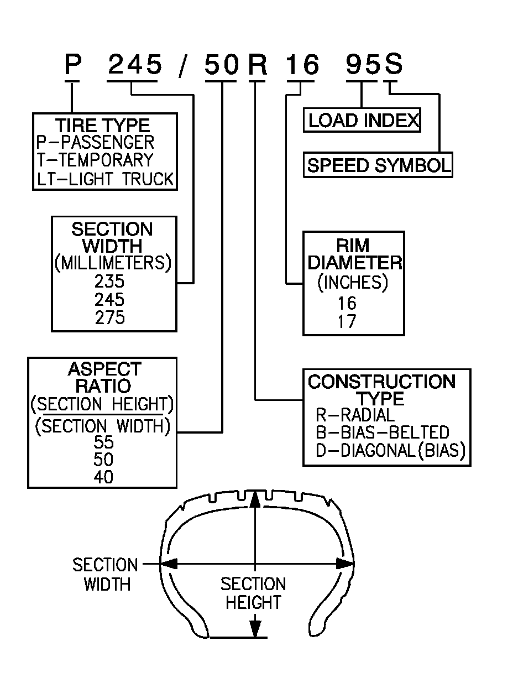

P-Metric Sized Tires Description
P-Metric Sized Tires Description
P-Metric Sized Tires Description:

Replacement tires should be of the same tire performance criteria (TPC) specification number. This will ensure the same size, the same load range, and the same construction as those originally installed on the vehicle.